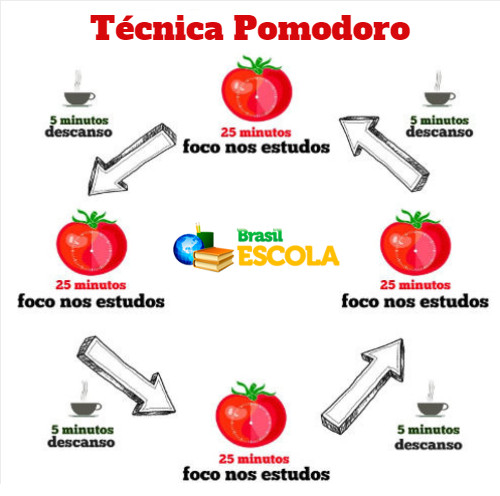

História
A técnica Pomodoro, desenvolvida em 1988 pelo italiano Francisco Cirillo, é um método de gestão de tempo que pode ser aplicado para diversas tarefas, seja nos estudos, seja no trabalho.
Conforme o livro de Cirillo “The Pomodoro Technique”, a técnica foi criada para utilizar o tempo como um valioso aliado e realizar o que queremos fazer e do jeito que queremos fazê-lo. Além disso, capacita-nos continuamente para melhorar nossos processos.
Ao usar esse método, é possível saber não só a quantidade de atividades que são feitas, como também a qualidade. Além disso, pode-se medir o que está atrapalhando a realização das tarefas.
Como é a técnica Pomodoro

Pomodoro significa tomate em italiano. A fruta faz alusão ao tempo durante o qual você pode fazer determinada tarefa. Cada pomodoro é dividido em quatro pomodoris, e cada um destes equivale a 30 minutos.
Anote o que precisa para usar essa técnica:
• Um timer ou despertador (pode ser do celular)
• Papel ou bloco de notas no computador/celular para escrever as atividades a serem realizadas
O método Pomodoro é simples e dura duas horas. Primeiro, você realiza uma atividade durante 25 minutos. Quando acabar o tempo, descansa 5 minutos. Assim sucessivamente até que complete as duas horas. Como recompensa, você descansa mais 30 minutos.
Vantagens de usar a técnica Pomodoro
O italiano Cirillo afirma, no seu livro, que a técnica Pomodoro oferece vários pontos positivos. Veja alguns:
• Alivia a ansiedade;
• Aumenta o foco e a concentração por meio da redução das interrupções;
• Aumenta a conscientização das decisões;
• Aumenta a motivação e mantém-na constante;
• Reforça a determinação para atingir os objetivos;
• Melhora o processo de trabalho ou estudo;
• Reforça sua determinação de continuar a aplicar-se em face de complexas situações.